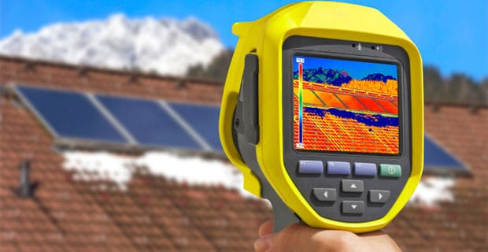

On appelle déperdition thermique la perte de chaleur qui se produit dans une habitation. Le plus souvent, elle est la cause d’une mauvaise isolation thermique. En général, son impact sur votre consommation énergétique sera beaucoup plus important que celui de la performance thermique de vos équipements de chauffage (chaudières, poêles, pompe à chaleur…). Ainsi, trouver les causes et les traiter est primordial.
Une fois les points faibles de l’habitation connus, il est possible d’agir dessus. Selon la nature des problèmes on pourra :
Il existe des moyens faciles de calculer les déperditions thermiques dans un logement. Les deux plus importants sont le bilan thermique et la caméra thermique.
La méthode du bilan thermique: elle consiste à calculer le bilan thermique d’une pièce ou de l’habitation dans son ensemble. Ce calcul inclue le volume à chauffer en m3, la différence entre la température intérieure et extérieure et le coefficient G, lequel mesure la puissance de chauffage nécessaire pour un volume donné. Le résultat est un nombre compris entre 0,4 et 1,5 : plus ce chiffre est élevé, plus le logement est mal isolé.
La méthode de la caméra thermique: elle consiste à utiliser un thermograme qui va détecter les pertes de chaleur, les ponts thermiques et les défauts d’isolation du logement.
